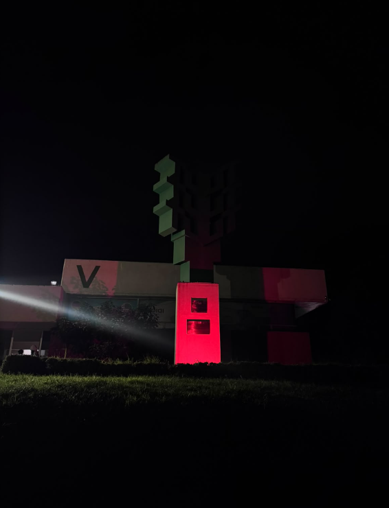

Investigación destacada
¿Qué hemos normalizado sin cuestionarlo?
Exploramos los problemas cotidianos que merecen respuestas: investigamos con fuentes verificables y te mostramos qué sabemos, qué dicen las personas y qué falta por saber.

Fotografía · espacio reservadoInvestigaciones recientes
Ver todasCómo distinguimos lo que sabemos
Nuestra metodologíaHecho comprobado
Dato respaldado por un documento o una fuente oficial que puedes consultar.
Testimonio
Relato de una persona. Es valioso, pero no sustituye a la evidencia; se publica con consentimiento.
Pregunta pendiente
Lo que aún no sabemos y qué información falta para poder responderlo.